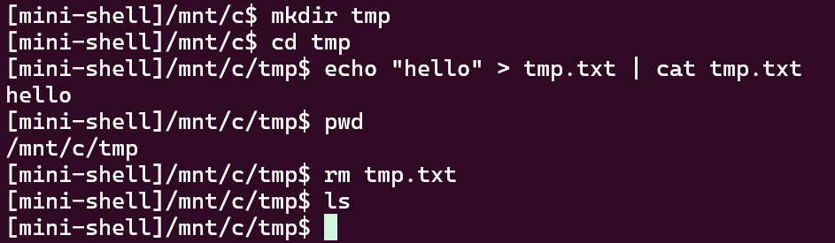
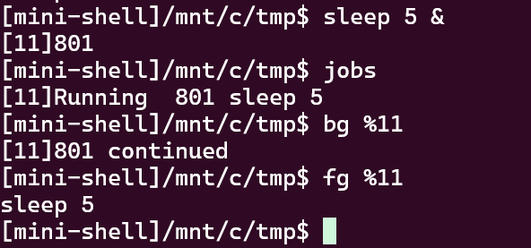
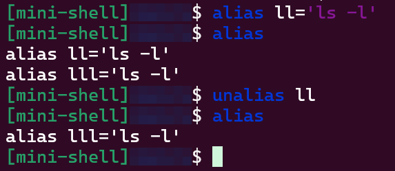
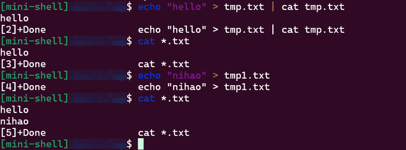
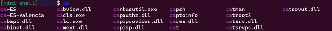
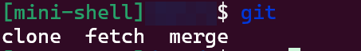

Nailong Shell：用 Lua 配提示符、补全和高亮
本文介绍一个交互式 Shell。先把 管道、重定向、作业控制、内建命令 跑通，再叠 行编辑、别名、通配、Tab 补全和语法高亮
配置用 Lua，文件名固定是 .mini_shellrc
源码在 Nailong-Shell，主程序是单文件 nailong_shell.cpp
跑起来大概是这样，cd、重定向、管道都能用：

作业控制也有，sleep 5 & 之后可以用 jobs / bg / fg：

行编辑没有自己从零搓，getline 搞不定补全和高亮，常见的 linenoise、readline 也不好同时接 Lua 着色
后来用的是 replxx 库：历史、左右键、Tab、实时高亮都在它上面挂回调
依赖与构建
简述
环境按 Linux 来，C++17。依赖：
g++- Lua 5.4：
sudo apt-get install liblua5.4-dev，头文件在/usr/include/lua5.4 - replxx：发行源里没有，要从源码编
cd replxx
mkdir build && cd build
cmake ..
make -j$(nproc)
sudo make install
编译链接走 makefile：-I/usr/local/include -I/usr/include/lua5.4，-lreplxx -llua5.4 -lm -ldl。CONFIG_PATH 会打成宏 DEFAULT_RC_PATH，默认是当前目录下的 .mini_shellrc。
实现
make
./nailong_shell
# 或
make run
指定配置文件时，文件名必须是 .mini_shellrc：
make CONFIG_PATH="$PWD/.mini_shellrc"
# 运行时也可以
CONFIG_PATH=/path/to/.mini_shellrc ./nailong_shell
main 里先用 wordexp 展开路径，再 check_config_path：后缀不对，或者文件打不开，直接退出
启动后接管 终端进程组，装 SIGCHLD 等信号，再 init_lua、init_default_completions、load_rc
进程和作业
作业（Job） 代表一条管道上的 一组命令，比如 command1 | command2 | command3
- 进程（Process）： Job 里的每一条命令，
fork()出来的子进程，代码里是struct process - 作业（Job）： 整条管道，是一个 进程组，用
pgid标识，代码里是struct job
typedef struct process {
struct process* next;
char* * argv;
pid_t pid;
int completed;
int stopped;
int status;
int infile;
int outfile;
} process;
typedef struct job {
struct job* next;
process* first_process;
pid_t pgid;
char* command;
int notified;
int background;
struct termios tmodes;
int job_id;
} job;
相关函数：
-
add_job(j)/find_job_by_id(id)/job_remove(target)（辅助函数）：把作业挂进链表、按作业号找、从链表摘掉并释放-
job_id从next_job_id往上加 -
摘掉时把
command、每段process的argv一起free -
骨架：
static void add_job(job* j) { // TODO: j->job_id = next_job_id++ // TODO: 头插进 job_list } static job* find_job_by_id(int id) { // TODO: 顺着 job_list 找 job_id == id，找不到 return NULL } static void job_remove(job* target) { // TODO: 从链表摘掉 // TODO: free command，遍历 first_process 释放 argv 和节点 }
-
-
job_is_stopped(j)/job_is_completed(j)（辅助函数）：看这条作业里的进程是不是都停了、都结束了-
有一个进程既没
completed也没stopped，作业就还在跑 -
有一个进程没
completed，作业就还没完成 -
骨架：
static int job_is_stopped(job* j) { // TODO: 任一 process 未 completed 且未 stopped，return 0，否则 1 } static int job_is_completed(job* j) { // TODO: 任一 process 未 completed，return 0，否则 1 }
-
分词
分词器要同时处理引号、转义和分隔符 | < > &
搞错的话，分隔符会进普通参数，后面重定向和管道都会脏
相关函数：
-
parse_line(line)：把一行拆成token数组，最后一项NULL-
空白当分隔
-
'/"成对吃，中间的|<>不当分隔符 -
\吃掉转义，下一个字符原样留下 -
碰到
|<>&且不在引号里，单独做成一个token -
骨架：
static char** parse_line(char* line) { // TODO: 跳过空白 // TODO: 引号内原样拷，反斜杠吃转义 // TODO: | < > & 单独成 token // TODO: tokens[pos] = NULL 后 return }
-
重定向与管道
这里只实现 < 和 >，即 覆盖重定向
因为要和管道一起处理，每段管道是一个 process，自己带着 infile / outfile
分词之后，在每个 process 上扫 argv（argv[0] 是程序名，其余是参数，最后 NULL）：
- 遇到
>：open目标文件为O_WRONLY | O_CREAT | O_TRUNC，记到process->outfile - 遇到
<：O_RDONLY打开，记到process->infile - 随后把符号和文件名这两个
token从argv里挪掉 - 遇到行尾
&：标job->background = 1，这个token也删掉
执行时在 子进程里 dup2 到 STDIN_FILENO / STDOUT_FILENO，再 execvp
有管道且没显式重定向时，用管道的读端或写端去填 infile / outfile
管道默认 IO，重定向优先覆盖。父进程要 及时关掉 用完的管道端，不然 fd 泄漏，下游读不到 EOF
相关函数：
-
handle_redirection_and_background(j)：扫每个 process 的argv，打开重定向文件、抠掉 token、看有没有&-
骨架：
static void handle_redirection_and_background(job* j) { // TODO: 每个 process 的 infile/outfile 先置 -1 // TODO: 碰到 > 打开 O_WRONLY|O_CREAT|O_TRUNC，记 outfile，memmove 掉两个 token // TODO: 碰到 < 打开 O_RDONLY，记 infile，同样抠掉 // TODO: 碰到行尾 &，background = 1，token 置 NULL }
-
-
launch_job(j, foreground)：给相邻 process 建pipe，fork，子进程里设进程组、dup2、execvp-
下一段没显式输入，就把上一根管道的读端给它
-
父进程关掉自己那头，把读端留给下一段当
infile -
前台就
wait_for_job，后台只打印[job_id] pgid -
骨架：
static void launch_job(job* j, int foreground) { // TODO: 遍历 process // TODO: 没有 outfile 且后面还有 process：pipe，写端给自己，读端给下一段 // TODO: fork：子进程 setpgid、需要的话 tcsetpgrp，信号改回 SIG_DFL // TODO: dup2 infile -> stdin，dup2 outfile -> stdout，关掉多余 fd // TODO: execvp，失败 _exit // TODO: 父进程记下 pid，setpgid，关掉用完的管道端 // TODO: 前台 wait_for_job，后台 printf("[%d]%d\n", job_id, pgid) }
-
作业控制
Job 是对子进程的一层管理：把一条管道上的进程捆成进程组，统一调度、等结束、切前后台
主要做四件事：
- 进程分组（
setpgid）- 一条 Job 里的进程都进同一个组
j->pgid - 这样
SIGINT/SIGTSTP/SIGCONT可以对整个组下手 - 代码里是
setpgid(pid, pgid ? pgid : pid)
- 一条 Job 里的进程都进同一个组
- 前后台
- 前台：
tcsetpgrp把终端交给这个组，再wait_for_job阻塞到完成或停止 - 后台： 不抢终端，立刻出提示符，状态靠
SIGCHLD更新 fg/bg在这两种状态之间切
- 前台：
- 状态追踪（
waitpid和SIGCHLD）- 每个 process 记
completed/stopped sigchld_handler里非阻塞waitpid(-1, ..., WNOHANG | WUNTRACED | WCONTINUED)，子进程一变就更新
- 每个 process 记
- 终端 I/O
- 终端控制权在 shell 自己的
shell_pgid和前台 Job 的j->pgid之间切 - 只有前台组能读写终端
- 终端控制权在 shell 自己的
启动时 shell 先把自己做成一个进程组，并忽略 SIGINT / SIGTSTP 这类，免得自己被 Ctrl+C 干掉。子进程 execvp 之前再改回 SIG_DFL
flowchart TB
A[读入一行] --> B[parse_line]
B --> C{"单段且是内建?"}
C -->|是| D[当前进程直接跑]
C -->|否| E[拆成 process 链表]
E --> F[handle_redirection_and_background]
F --> G[launch_job]
G --> H{"前台?"}
H -->|是| I[tcsetpgrp 交给作业]
I --> J[wait_for_job]
J --> K[终端夺回 shell]
H -->|否| L["打印作业号，SIGCHLD 收状态"]
相关函数：
-
sigchld_handler(sig)：子进程停了或退出时，更新对应process-
waitpid要带WNOHANG | WUNTRACED | WCONTINUED -
WIFSTOPPED就标stopped，否则标completed -
骨架：
static void sigchld_handler(int sig) { // TODO: 保存 errno // TODO: while waitpid(-1, WNOHANG|WUNTRACED|WCONTINUED) > 0 // TODO: 按 pid 找到 process，stopped 或 completed // TODO: 恢复 errno }
-
-
wait_for_job(j)：前台阻塞等这个进程组-
waitpid(-j->pgid, ..., WUNTRACED)，停了或做完就停循环 -
然后
tcsetpgrp把终端还给 shell，终端属性也换回来 -
骨架：
static void wait_for_job(job* j) { // TODO: do waitpid(-j->pgid, WUNTRACED) 直到 stopped 或 completed // TODO: 更新对应 process 的 stopped/completed // TODO: tcsetpgrp 还给 shell_pgid // TODO: 把作业的 termios 存下来，shell 自己的模式设回去 }
-
-
fg/bg：切前后台- 可以带
%作业号，不带就拿链表头那个 fg：background = 0，tcsetpgrp交给作业，停着的就kill(-pgid, SIGCONT)，再wait_for_jobbg：background = 1，停着的同样SIGCONT，打印continued，不等待jobs：遍历链表，打Done/Stopped/Running/Foreground
- 可以带
作业控制和终端这块比较烦的是：进程组要设对，前后台切换要配 SIGCONT，SIGCHLD / waitpid 要把状态盯准，不然会出僵尸进程
内建命令
内建是 当前这个 shell 进程自己执行 的，不 fork + execvp
有：
exitcd/pwdalias/unaliasjobs/fg/bgreloadtest_config
run_builtin 认出来就返回 1，外面不再当外部命令启动。有管道时不当内建跑，整条还是走 Job
为什么 cd 不能当外部命令
shell 跑起来之后，当前进程已经是这个 shell，不是原来的 bash
外部命令的路径是：
fork 子进程 -> 子进程 execvp 换成 ls 这类程序 -> 结果经作业返回到原来的 shell
ls 这么干没问题，它只在子进程里干活，父进程的 cwd 不用变
cd 如果也这么干，chdir 只发生在 子进程 里，子进程一结束目录就没了，父进程还停在原地，下一条提示符的路径不会变
所以 cd 只能在当前 shell 进程里 chdir，没参数就 chdir($HOME)
pwd 同理，直接 getcwd 打出来就行，没必要再起一个进程
相关函数：
-
run_builtin(argv)：认出内建就执行，返回 1，不是内建返回 0-
骨架：
static int run_builtin(char** argv) { // TODO: exit -> exit(0) // TODO: cd -> chdir(argv[1] 或 HOME)，失败 perror // TODO: pwd -> getcwd 打印 // TODO: jobs -> 遍历 job_list 打状态 // TODO: fg -> 找作业，tcsetpgrp，必要时 SIGCONT，wait_for_job // TODO: bg -> 找作业，必要时 SIGCONT，打印 continued // TODO: alias / unalias / reload / test_config // TODO: 都不是 return 0 }
-
Lua 配置
简述
配置不是自己解析 ini，而是开一个 Lua 状态机，把 C 函数注册进去，再 luaL_dofile 跑 rc
rc 里能改提示符、别名、补全表、颜色、历史上限
仓库里有一份示例：
clear_aliases()
clear_completions()
set_prompt("[nailong-shell]%CWD%BRANCH$ ")
set_flag("COLORIZE", 1)
set_flag("SHOW_GIT", 1)
set_alias("lll", "ls -l")
set_completion("git", {"fetch", "merge", "clone"})
set_color("command", "blue")
set_color("option", "cyan")
set_color("special", "yellow")
set_color("string", "magenta")
set_history_max(50)
%CWD 展开成当前目录，%BRANCH 在 SHOW_GIT 打开时读 git 分支。没有 rc 文件会直接报错退出，不会自动创建。
实现
init_lua 里 luaL_newstate、luaL_openlibs，再注册接口：
lua_register(L, "set_alias", lua_set_alias);
lua_register(L, "set_prompt", lua_set_prompt);
lua_register(L, "set_color", lua_set_color);
lua_register(L, "set_completion", lua_set_completion);
lua_register(L, "set_flag", lua_set_flag);
lua_register(L, "clear_aliases", lua_clear_aliases);
lua_register(L, "clear_completions", lua_clear_completions);
lua_register(L, "set_history_max", lua_set_history_max);
set_alias 把头插进别名链表。set_completion 第二个参数是 Lua 表，按下标掏字符串，挂到对应 key。set_color 把 blue、cyan、bright_* 这类名字译成 ANSI，写进 g_colors.command / option / special / string。set_flag 只认 COLORIZE 和 SHOW_GIT。
load_rc 可以先清掉旧别名和补全，颜色重置成默认，再执行 rc。启动时 load_rc(1) 全清，热重载时 load_rc(0) 保留已经在内存里的表，只覆盖 rc 里写过的项。
读每一行之前会看文件 mtime：
static int should_reload_config() {
struct stat st;
if (stat(g_config_path.c_str(), &st) != 0) {
return 0;
}
if (!g_config_loaded || st.st_mtime > g_config_mtime) {
g_config_mtime = st.st_mtime;
return 1;
}
return 0;
}
变新了就自动重载。内建命令 reload 也可以手动刷一次。test_config 把当前提示符、颜色、补全规则打出来，方便对配置。
提示符由 build_prompt_string 扫 g_prompt_fmt，碰到 %CWD、%BRANCH 就替换。分支是读 .git/HEAD，ref: refs/heads/... 就取最后一段。COLORIZE 打开时，方括号标签、路径、$ 会分别上色。
别名与通配
简述
别名可以写在 rc 里，也可以运行时用内建 alias / unalias。通配走 POSIX glob，支持 *、?、[...]，顺带 GLOB_TILDE。
实现
执行前先看第一个 token 在不在别名表里。命中就把别名展开值和后面的参数拼回一行，再 parse_line 一次：
static char* * expand_alias(char* * tokens, char* * original_line_ref) {
const char* val = nullptr;
for (alias_entry* e = alias_head; e; e = e->next) {
if (strcmp(e->name, tokens[0]) == 0) {
val = e->value;
break;
}
}
if (!val) {
return tokens;
}
char* new_line = strdup(val);
for (int i = 1; tokens[i]; ++i) {
strcat(new_line, " ");
strcat(new_line, tokens[i]);
}
return parse_line(new_line);
}
所以 set_alias("lll", "ls -l") 之后，输入 lll 就等于 ls -l。

通配在每个参数上扫 *?[，有通配符才 glob，没有就原样拷：
if (strpbrk(tok, "*?[")) {
glob_t g;
glob(tok, GLOB_NOCHECK | GLOB_TILDE, nullptr, &g);
// 把 gl_pathv 追加进新 argv
}
GLOB_NOCHECK 是一个都匹配不到时，把模式本身留下来，避免命令直接消失。

Tab 补全
简述
补全挂在 replxx 的 set_completion_callback 上。当前 token 的 UTF-8 码点数记进 contextLen，这样中文路径也能把要替换的那段量对。候选项分几路：
- 行首：内建命令，加上
PATH里可执行文件 cd：只补目录- 已经有命令：补文件，或者查 rc / 默认表里注册过的子命令
- 默认表里预置了
git clone、git commit等，rc 还能再加
git <tab> 会给出 fetch / merge / clone。git cl<tab> 直接补成 git clone。cd d<tab> 在只有 dev 目录时会补成 dev。cat t<tab> 同样按文件名前缀收。
实现
回调先切开 head（最后一个空白之前）和 token（正在打的那一段），再交给 collect_completions_for_replxx：
if (toks.size() >= 1 && toks[0] == "cd") {
collect_dir_candidates(prefix, &cands);
return arr;
}
if (toks.size() >= 1) {
comp_collect_with_prefix(toks[0].c_str(), prefix, &cands);
}
if (head == nullptr || head_all_space) {
collect_builtin_candidates(prefix, &cands);
collect_path_candidates(prefix, &cands);
} else {
collect_file_candidates(prefix, &cands);
}
collect_path_candidates 按 : 拆 PATH，readdir 之后还要 stat 看有没有执行位。文件和目录用 glob(prefix*)。rc 里的 set_completion("git", {"fetch", "merge", "clone"}) 会覆盖/补充 key 为 git 的表。两段 key 也可以，默认就有 git clone 对仓库 URL 的候选。
结果会排序去重，和当前 token 相同的丢掉，避免 Tab 原地空转。


方向键也是 replxx 自带的：左右移光标，上下翻历史，Ctrl+←/→ 按词跳。历史条数由 set_history_max 卡住，超出就从链表头丢掉。
语法高亮
简述
高亮也是回调。highlight_for_replxx 先按 token 类型插 ANSI，再由 parse_ansi_to_colors 转成 replxx 的 Color 数组，按字符涂。
颜色对应：
command：每段管道的第一个 tokenoption：以-开头的参数special：|<>&string：单引号、双引号里的内容
实现
扫输入时维护 first_token。碰到 | 会重新当成下一段命令的开头。引号里允许 \ 转义。COLORIZE 关掉就不涂。
rx.set_highlighter_callback([](std::string const & input,
std::vector<replxx::Replxx::Color> & colors) {
char* h = highlight_for_replxx(input.c_str());
parse_ansi_to_colors(h ? h : "", input.size(), colors);
if (h) free(h);
});
rc 里改 set_color 之后，下一次读行就能看到新颜色。自动重载和 reload 走的是同一套 load_rc
管道、重定向、作业和交互层都在同一个 nailong_shell.cpp 里，仓库 README 有功能表

说些什么吧！